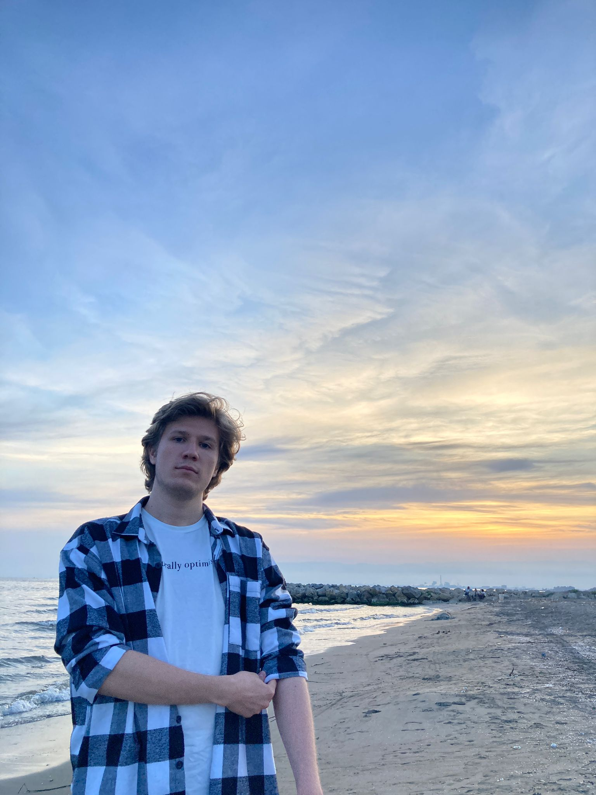

Batın Durmaz

Summary
I am dedicated and funny person who wants to being a Web Developer.
Education
Computer Engineering - University of Kahramanmaraş Sütçü İmam (2020-2024)
Work experience
I am a student so i dont have any work experience. My responsibilites are
continious improvement.
Skills
- Problem solving and analytical thinking
-
Programing languages:
- C++
- C#
- Java Script
-
Web Technologies:
- HTML
- CSS
- Java Script
- MySQL
- Being able to use Adobe apps
- Digital drawing and design
Other